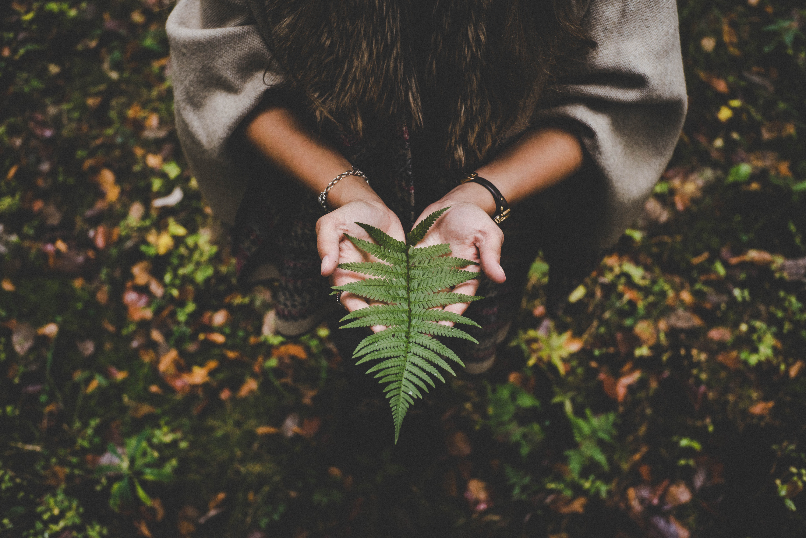

Birds have equal rights on this earth as we humans do, We have destroyed so much of forests that they don't know where to go.
there are countless things which we do that harm them
Its our Duty
We have done enough destruction, now its time to help them grow
We can not do every thing, but, everyone of us can do something for them.

Plant More trees
Planting more tress can help them to build their habitat, More trees means more chances of survival for birds and growth of their species.
Helps to increase diversity
More the number of trees, more the diversity of birds will be.
Forests will helps in conserving bird diversity.
Give some food and water
We can help birds and their families to grow by just simply feeding them some grains,
We can place an old cup or a container filled with water
to help them find water.
Just doing these simple things, we can help birds to grow.